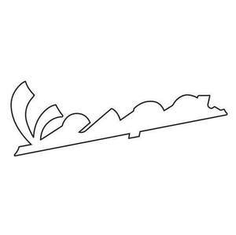

Trade Mark Journal No.2025/051 19 December 2025
UK00004267782 22 September 2025 (1,3,4,8,9,11,12,14,16,18,20,21,22,24,25,27,28,29,30,32,33,34,35,36,37,39,41,42,43)

- Class 1
- Industrial chemicals; antifreeze; ant freezing liquids; liquid chemicals used to inhibit and remove limescale deposits; liquid stabilizing chemical preparations for cooling circuits for internal combustion engines for motor vehicles, tractors, earth-moving machines, commercial and industrial vehicles, 2/4 time engines for motor vehicles, and fixed and naval engines; descaling preparations for industrial purposes for use in connection with radiators, internal combustion engines, and cooling circuits related to said equipment; chemical preparations, namely degreasing and cleaning solvents for use in connection with radiators, internal combustion engines, and cooling circuits related to said equipment; additives, chemical, to motor fuel; brake fluids; protective antifreeze fluids for compressed-air braking systems of industrial vehicles; power steering fluid.
- Class 3
- Personal care products namely hair care, body care, and skin care products and massage oils; perfumery; colognes; eau de toilette; bath and body products namely bath gels, bath oils, bath salts, bubble baths, bath additives in the nature of bath salts, bath oils, body cleansers, body gels, body powders, body scrubs, body mists, body wash, body lotions and creams; soaps namely bar soaps, body soaps, deodorant soaps, body care soaps, bath soaps, dish soaps, hand soaps, laundry soaps, shaving soaps, skin soaps, saddle soaps; toiletries; deodorants for personal use; shaving preparations namely shaving creams, shaving balms; grooming preparations; hair care preparations and hair styling preparations; cosmetics; essential oils for personal use; home fragrances and products ancillary namely fragrance sachets, room fragrance refills for non-electric room fragrance dispensers, refills for electric room fragrance dispensers, essential oils as perfume for laundry purposes.
- Class 4
- Lubricating oils and greases for starting devices for vehicle trucks, agricultural machines, earth-moving machines, tractors; lubricating oils and greases in general for the internal combustion engines of motor vehicles and motorcycles, trucks, tractors, earth-moving machines, and other mobile or stationary equipment, industrial and commercial vehicles; lubricating oils and greases for transmission devices of vehicles, trucks, agricultural machines, earth-moving machines, tractors; oils for the deep cleaning of bleaching machines and chain saws; oils for fixed and naval engines; liquid fuels including motor fuels; oils specifically for industrial purposes; oils for chucks, slider rails, gears; protective greases for industrial purposes; oils for the tempering of metals; cooling lubricants for the cutting of metals; cooling lubricants which can be mixed with water; oils, fluids, and lubricants for the pressing and cutting of metals; oils for servo-command hydraulic systems namely for motor vehicles, trucks, earth-moving machines, tractors, and agricultural machinery in general, industrial and commercial vehicles; oils for the gearshift forks of motor vehicles and oils for brake cylinders; multi-use lubricants; chain lubricants for bicycles and motorcycles.
- Class 8
- Hatchets; sharpening steels; kitchen mandolins; stropping instruments; tattoo needles; reamers; scythe rings; implements for decanting liquids [hand tools]; instruments and tools for skinning animals; hand implements for hair curling; ear-piercing apparatus; apparatus for destroying plant parasites, hand-operated; depilation appliances, electric and non-electric; laser hair removal apparatus, other than for medical purposes; apparatus for tattooing; oyster openers; tin openers, non-electric; bow saws; silver plate [knives, forks and spoons]; earth rammers [hand tools]; rams [hand tools]; side arms, other than firearms; harpoons for fishing; axes; whetstone holders; fire irons; bayonets; cutter bars [hand tools]; stirring sticks for mixing paint; mortise chisels; holing axes; graving tools [hand tools]; pin punches; screwdrivers, non-electric; emery boards; mitre boxes [hand tools]; marline spikes; trowels; shears; spanners [hand tools]; bits [parts of hand tools]; tool belts [holders]; cutters; cutlery; knives; hobby knives [scalpels]; nail punches; table cutlery [knives, forks and spoons]; leather strops; razor strops; fruit corers; glaziers' diamonds [parts of hand tools]; thistle extractors [hand tools]; nail extractors, hand-operated; diggers [hand tools]; sickles; scythes; irons [nonelectric hand tools]; dies [hand tools]; harpoons; fulling tools [hand tools]; fullers [hand tools]; borers; scissors; agricultural forks [hand tools]; lasts [shoemakers' hand tools]; milling cutters [hand tools]; tap wrenches; extension pieces for braces for screw taps; rasps [hand tools]; sword scabbards; budding knives; hair braiders, electric; blades [weapons]; blades [hand tools]; scythe stones; awls; levers; files [tools]; fingernail polishers, electric or non-electric; hair clippers for personal use, electric and non-electric; cattle shearers; beard clippers; machetes; masons' hammers; sledgehammers; expanders [hand tools]; knife handles; scythe handles; handles for hand-operated hand tools; reamer sockets; cleavers; ditchers [hand tools]; hammers [hand tools]; lifting jacks, hand-operated; taps [hand tools]; mallets [hand instruments]; emery grinding wheels; grindstones [hand tools]; vices; clamps for carpenters or coopers; mortars for pounding [hand tools]; fish tapes [hand tools]; ratchets [hand tools]; palette knives; shovels [hand tools]; vegetable peelers, hand-operated; perforating tools [hand tools]; braiders [hand tools]; planes; border shears; pickaxes; ice picks; crow bars; eyelash curlers; sharpening stones; meat claws; wire strippers [hand tools]; tweezers; hair-removing tweezers; numbering punches; cuticle tweezers; nail nippers; pincers; guns, hand-operated, for the extrusion of mastics; guns [hand tools]; hand pumps; punch pliers [hand tools]; saw holders; drill holders [hand tools]; pruning scissors; tree pruners; chisels; edge tools [hand tools]; daggers; punch rings [knuckle dusters]; riveting hammers [hand tools]; centre punches [hand tools]; punches [hand tools]; money scoops; truncheons; scrapers [hand tools]; scrapers for skis; razors, electric or non-electric; paring irons [hand tools]; scraping tools [hand tools]; rakes [hand tools]; riveters [hand tools]; food processors, hand-operated; bill-hooks; pruning knives; hoes [hand tools]; sculptors' chisels; hackles [hand tools]; stone hammers; sabres; saws [hand tools]; manicure sets, electric; shaving cases; gouges [hand tools]; hand-operated corn cob strippers; syringes for spraying insecticides; wick trimmers [scissors]; fireplace bellows [hand tools]; swords; spatulas [hand tools]; vegetable spiralizers, hand-operated; rabbeting planes; squares [hand tools]; embossers [hand tools]; stamping-out tools [hand tools]; agricultural implements, hand-operated; abrading instruments [hand instruments]; foundry ladles [hand tools]; sharpening instruments; livestock marking tools; instruments for punching tickets; hollowing bits [parts of hand tools]; tube cutting instruments; sterile body piercing instruments; carpenters' augers; hoop cutters [hand tools]; box cutters; priming irons [hand tools]; frames for handsaws; penknives; pliers; metal band stretchers [hand tools]; lawn clippers [hand instruments]; shearers [hand instruments]; bits [hand tools]; trowels [gardening]; paring knives; vegetable choppers; augers [hand tools]; hand tools, hand-operated; ski edge sharpening tools, hand-operated; garden tools, hand-operated; spades [hand tools]; insecticide vaporizers [hand tools]; weeding forks [hand tools]; Ice picks; axes; ice axes; hatchets; multi-purpose knives; shovels; crampons.
- Class 9
- Downloadable digital media namely digital assets in the form of images, photos, videos, files containing text, spreadsheets, or slide decks relating to contents stored digitally; Data processing equipment; downloadable computer programs; recorded computer operating programs; recorded computer programs; recorded computer software; measuring instruments; magnetic data carriers; processors being central processing units; downloadable computer software applications; electric accumulators; electric batteries; external batteries; sirens; chargers for electric batteries; portable chargers; flashing safety lights; radios; speed checking apparatus for vehicles; speedometers for vehicles; vehicle breakdown warning triangles; safety goggles; protective face shields for protective helmets; protective helmets; safety helmets; articles of protective clothing for motorcyclists for protection against accident or injury irradiation and fire; articles of protective clothing for wear by motorcyclists for protection against accidents or injury namely safety boots and safety gloves; fireproof motorcycle racing suits for safety purposes; computers; mouse pads; computer mice; USB cables; USB adapters; blank USB flash drives; electronic pens for visual display units; magnetically encoded credit cards and payment cards; wireless headsets for use with mobile telephones; headphones; headsets; diagnostic software designed for maintenance and repair of motor vehicles; pre-recorded compact disks containing vehicle owner manuals and software for managing the vehicle maintenance schedule; video game cartridges; computer game programs; mobile phones; portable media players; protective covers for mobile phones; protective covers for portable multimedia players; protective covers for audio reproduction devices; protective covers for palmtops; protective covers for electronic agendas; protective covers for photographic cameras; protective covers for film cameras; protective covers and cases for tablet computers; cases especially made for photographic apparatus and instruments; eyeglass cases; spectacles; spectacle frames; eyeglass chains; eyeglass cords; chains and cords for sunglasses; optical lenses; optical corrective lenses; lenses for eyeglasses; video game cassettes; video game discs; memory cards for video game machines; satellite navigational apparatus namely a global positioning system (GPS); multimedia platforms to provide mobile connectivity and satellite navigation; Divers' masks, gloves for divers, diving suits, swimming floats for safety purposes, ear plugs for divers, containers for earplugs, diving equipment, smartwatches, wetsuits for waterskiing and sub-aqua, sub-woofers, woofers, wet suits for scuba diving, wearable technological devices being smartwatches, smart wristbands and virtual reality headsets; protective helmets; goggles for sports; altimeters; GPS devices; avalanche transceivers; two-way radios; cameras designed for mountain and extreme environments; safety nets.
- Class 11
- Electrically heated clothing; friction lighters for igniting gas; gas lighters; regulating and safety accessories for water apparatus; regulating and safety accessories for gas apparatus; heat accumulators; steam accumulators; hot air ovens; stills; feeding apparatus for heating boilers; disinfectant apparatus for dispensing solutions into water-pipes for sanitary installations; apparatus for fertilizer irrigation; hot air apparatus; hydromassage bath apparatus; swimming pool chlorinating apparatus; chromatography apparatus for industrial purposes; deodorizing apparatus not for personal use; fermentation apparatus for industrial purposes; aquarium filtration apparatus; lighting apparatus for vehicles; ionization apparatus for the treatment of air or water; heating apparatus for solid liquid or gaseous fuels; heating and cooling apparatus for dispensing hot and cold beverages; aquarium heaters; drying apparatus and installations; lighting apparatus and installations; cooling appliances and installations; refrigerating appliances and installations; water softening apparatus and installations; cooking apparatus and installations; sanitary apparatus and installations; ventilation [air-conditioning] installations and apparatus; underfloor heating apparatus and installations; heating apparatus electric; refrigerating apparatus and machines; ice machines and apparatus; water purifying apparatus and machines; air purifying apparatus and machines; hand drying apparatus for washrooms; bath fittings; air-conditioning apparatus; kilns; disinfectant apparatus for medical purposes; distillation apparatus; water filtering apparatus; fumigation apparatus not for medical purposes; beverage cooling apparatus; air deodorizing apparatus; gas scrubbing apparatus; oil-scrubbing apparatus; disinfectant apparatus; desiccating apparatus; whirlpool-jet apparatus; multicookers; water intake apparatus; glue-heating appliances; coffee roasters; malt roasters; refrigerating cabinets; structural framework for ovens; hair dryers; barbecues; lightsticks battery-operated; alcohol burners; incandescent burners; burners for lamps; bidets; bioreactors for use in the treatment of waste; bioreactors for use in the treatment of wastewater; hydrants; kettles electric; burners; coffee machines electric; gas boilers; heating boilers; boilers other than parts of machines; laundry room boilers; heating apparatus; socks electrically heated; clean chambers [sanitary installations]; refrigerating chambers; fireplaces domestic; flare stacks for use in the oil industry; flues for heating boilers; snow-making machines; wine cellars electric; extractor hoods for kitchens; ventilation hoods; coffee capsules empty for electric coffee machines; carbon for arc lamps; flushing tanks; furnace ash boxes; solar thermal collectors [heating]; distillation columns.
- Class 12
- Two-wheeled, three-wheeled, and four-wheeled vehicles; electrically powered scooters; electric push scooters [vehicles]; bodies for vehicles; brakes for vehicles; caps for land vehicle gas tanks; luggage nets for vehicles; seat covers for vehicles; shock absorbing springs for vehicles; suspension shock absorbers for vehicles; vehicle chassis; vehicle seats; pneumatic tires; casings for pneumatic tires; non-skid devices for vehicle tires; adhesive rubber patches for repairing inner tubes; air pumps for bicycles and motorcycles; tire repair patches; rims for vehicle wheels; valves for vehicle tires; air bags in the nature of safety devices for automobiles; electric cigarette lighters for land vehicles; anti-theft devices for vehicles; antitheft alarms for vehicles; horns for vehicles; safety seats for children for vehicles; bells for cycles; stands for bicycles and motorcycles; mudguards; direction signals for vehicles; frames for bicycles and motorcycles; luggage carriers for vehicles; pedals for bicycles and motorcycles; rearview mirrors; saddle covers for bicycles and motorcycles; saddlebags adapted for bicycles and motorcycles; saddles for bicycles and motorcycles; engines for land vehicles; electric motors for land vehicles; tank bags; sissy bar bags; tail bags; hard-shell bags mounted on either-side of the rear wheel attached to a framework; cases specially adapted for vehicles; Drive-chain guards for two-wheeled motor vehicles; boats; motor boats with outboard and inboard motors; yachts; barges; onboard equipment, instruments and fittings for boats; outboard and inboard marine engines; towing, launching, anchoring and refloating equipment for boats; two-wheeled vehicles; electrically powered scooters; electric push scooters [vehicles]; push scooters; self-balancing electric stand-up scooters; motorized scooters; mopeds; electric mopeds; personal watercraft; mountain bicycles; snowmobiles; all-terrain vehicles (ATVs); ski lifts; cable cars.
- Class 14
- Watches and clocks; pendulum clocks; chronographs and chronometers; rough gemstones; precious stones; diamonds; coral, emerald, sapphire, ruby, opal, topaz, aquamarine jewelry; earrings; rings; necklaces; bracelets; ornamental pins made of precious metal; shoe ornaments of precious metal; pearls; boxes of precious metal; jewels cases of precious metal; brooches; pins; tie clips; cuff links; watch straps; commemorative coins; key rings.
- Class 16
- Diaries; notebooks and exercise book; pens; fountain pens; rollerball pens; pencils; felt pens; pen-holders not of precious metal; adhesive labels; stickers and decalcomania transfers; flags made from paper; banners of paper; calendars; catalogues in the field of motorcycles and motorcycle accessories; paper atlases; brochures about travels, lifestyle, and entertainment; booklets about travel, lifestyle, and entertainment; document folders for cards and documents; albums for stamps, stickers, coins, and photographs; magazines about travel, lifestyle, and entertainment; lithographs; photographs; newspapers; printed periodicals in the field of travel, lifestyle, and entertainment; books in the field of travel, lifestyle, and entertainment; photographic prints, posters, postcards; erasers; cardboard boxes; agendas; photo albums; greeting cards; note pads; paper admission tickets for general use; envelopes; business cards.
- Class 18
- Bags; Handbags; travelling bags; briefcases; leather briefcases; leather credit card holders; wallets; key cases of leather; purses; trunks; suitcases; cosmetic bags sold empty; bags for sports; shoulder bags; leather shopping bags; school bags; rucksacks; sets of leather travelling bags; garment bags for travel; shoe bags for travel; beach bags; duffel bags; bags for mountain-climbers in the nature of all-purpose carrying bags; vanity cases not fitted; animal hides; boxes of leather; cases made of leather; unfitted furniture coverings of leather; umbrellas; parasols; leather leashes; Hiking backpacks; Hiking poles; mountaineering bags; travel bags designed for outdoor use.
- Class 20
- Cupboards; coatstands; work benches; benches [furniture]; counters [tables]; coffins; chests not of metal; dinner wagons [furniture]; costume stands; trolleys [furniture]; placards of wood or plastics; boxes of wood or plastic; lockers; tool chests not of metal empty; chests of drawers; baskets not of metal; console tables; picture frames; kennels for household pets; cradles; cushions; divans; display stands; door fasteners not of metal; legs for furniture; clothes hooks not of metal; curtain hooks; pillows; signboards of wood or plastics; lecterns; beds; bookcases; mannequins; door handles not of metal; camping mattresses; school furniture; inflatable furniture; office furniture; house numbers not of metal, non-luminous; works of art of wood, wax, plaster, or plastic; wickerwork; furniture partitions of wood; screens [furniture]; table tops; armchairs; footstools; knobs not of metal; towel stands [furniture]; bottle racks; hat stands; split rings not of metal for keys; book rests [furniture]; umbrella stands; magazine racks; plastic ramps for use with vehicles; filing cabinets; ladders of wood or plastics; step stools not of metal; writing desks; lap desks; chaise longues; chairs [seats]; high chairs for babies; valet stands; stools; sofas; mirrors [looking glasses]; statues of wood, wax, plaster, or plastic; sleeping mats; corks for bottles; registration plates not of metal; drafting tables; tables of metal; carts for computers [furniture]; indoor window blinds of textile; vats not of metal; trays not of metal; fans for personal use, non-electric.
- Class 21
- Napkin rings; bottle openers electric and non-electric; cutting boards for the kitchen; drinking glasses; tankards; bottles; coffeepots non-electric; shoe horns; decanters; window-boxes; flasks; signboards of porcelain or glass; majolica; table plates; powder compacts; knife rests for the table; soap holders; napkin holders; salt cellars; piggy banks; coffee services; ice pails; non-electric portable coolers; liqueur sets; tea services; spice sets; cruet sets for oil and vinegar; baking mats; cups; kitchen utensils; utensils for household purposes; toilet utensils; tableware other than knives, forks, and spoons; trays for domestic purposes; sugar bowls; pepper mills, hand-operated; corkscrews electric and non-electric; thermally insulated bags for food or beverages; wicker baskets for household purposes.
- Class 22
- Tents for mountaineering; climbing ropes; mountain-climbing ropes; .
- Class 24
- Face towels of textile; towels of textile; beach towels; bath linen except clothing; household linen; bed linen; table linen not of paper; brocades; tablemats of textile; travelling rugs [lap robes]; blankets for household pets; labels of textile; handkerchiefs of textile; pillowcases; covers for cushions; flags of textile or plastic; sheets [textile]; sleeping bag liners; drugget; eiderdowns [down coverlets]; table runners not of paper; sleeping bags; baby buntings; coasters of textile; banners of textile or plastic; cloth; oilcloth for use as tablecloths; curtains of textile or plastic; shower curtains of textile or plastic; fabric; place mats of textile; table napkins of textile; blankets.
- Class 25
- Clothing: coats, mantles, raincoats, dresses, suits, skirts, jackets, trousers, jeans, waistcoats, shirts, tee-shirts, blouses, jerseys, sweaters, blazers, cardigans, stockings, socks, underwear, night gowns, pajamas, bath robes, bathing suits, sports jackets, wind-resistant jackets, anoraks, tracksuits, sweatshirts, neckties, scarves, shawls, bandanas, foulards, sashes for wear, gloves, belts; waterproof shirts; waterproof pants; waterproof coats; footwear; footwear for motorcyclists, boots, shoes, sport shoes; hats; berets; visors; athletic shoes; slippers; flip flops; rubber shoes; wooden clog; beach shoes; gymnastic shoes; esparto shoes or sandals; sandals; bath sandals; Mountain boots; climbing shoes; insulated jackets; hiking pants; thermal wear; gloves; hats; scarves; gaiters; snow boots.
- Class 27
- Mats; beach mats; yoga mats, gymnasium exercise mats; personal exercise mats.
- Class 28
- Games and playthings: board games, parlour games, ride-on toys, toy scale model kits, scale model vehicles, miniature models of motorbikes, automobiles, and other vehicles, building blocks, building games, dolls, dolls' clothing, accessories for dolls, plush toys, toy vehicles; Games and playthings: toy full-size motorbikes, replicas for entertainment purposes, jigsaw puzzles, hand-held units for playing video games other than those adapted for use with external display screen or monitor, portable games with liquid crystal displays, arcade video game machines, radio-controlled toy vehicles, toys consisting of plastic racetracks; stand up paddle boards; toy trucks; toy vehicles; cases for playing cards; toy constructions; building blocks [toys]; toy buckets and shovels; small toy pens containing sand, including shovels, buckets, moulds and rakes; play balls; sports balls and balls game balls; game bowls; draughts; boards [for playing draughts]; chess games; chessboards; dice [games]; equipment for games, i.e. dice and chips; game compasses; darts; domino games; sets for draughts games; trictrac [royal board]; water pistols board games; construction games; manipulation games; board games; foosball; skittles [game]; swimming pools [game articles]; kites; marbles for games; rackets; tennis rackets; table tennis rackets; water skis; surfboards; sailboards bags specially designed for skis and surfboards; fins for swimmers; swimming waistcoats; swimming gloves; swimming teaching support straps; swimming floats; harnesses for sailboards; body boards; trampolines [sporting goods]; swimming equipment; playing cards; yoga blocks, yoga straps, yoga swings, gym balls for yoga; Cases for toy vehicles; Climbing harnesses; climbing holds; chalk for climbing; skis; snowboards; snowshoes.
- Class 29
- Meat, fish, poultry, and game; meat extracts; preserved, dried, and cooked fruits and vegetables; jellies, jams; eggs, milk; cheeses; cream; dairy products: dairy-based chocolate food beverages, dairy-based dips, dairy-based food beverages; margarine, margarine substitutes; sour cream, sour cream substitutes; butter, butter substitutes, peanut butter; yogurt; whipping cream; edible oils and fats.
- Class 30
- Beverages with tea, coffee, cocoa, chocolate base; biscuits; cakes; preparations made from cereals; pastry and pastry products; chocolate or cocoa confectionery; chocolate-based products; chocolate eggs; chocolate bars and tablets; wafers containing creamy fillings; candies; pralines; chocolate or cocoa spreads; ice creams; fruit sauces excluding cranberry and apple sauces.
- Class 32
- Beer; mineral water [beverages]; aerated water; non-alcoholic drinks; colas [soft drinks]; non-alcoholic malt beverages; soda pops; soft drinks; non-alcoholic punch; sports drinks; tomato juice beverages; vegetable juices [beverages]; de-alcoholized wines; non-alcoholic wine; fruit drinks; fruit juices; syrups and other preparations for making beverages.
- Class 33
- Alcoholic beverages, namely prepared alcoholic cocktails; amontillado; anisette; aperitif wines; aperitifs with distilled alcoholic liquor base; aperitifs with a wine base; alcoholic aperitif bitters; arrack; alcoholic bitters; brandy spirits; 'calvados’ (GI) Spirit drink; ‘champagne’ (GI) Wine; hard cider; prepared wine cocktail; ‘cognac’ (GI) Wine spirit; cooking wine; Cordials [alcoholic beverages]; curacao; distilled spirits of rice, corn, barley, fruit; extracts of spirituous liquors; gin; herb liqueurs; kirsch; liqueurs; distilled liquor; mead; ‘ouzo’ (GI) Distilled anis; ‘port wines’ (GI) Wine; alcoholic punch; wine punch; rum; sake; sangria; schnapps; ‘sherry’ (GI) Wine; ‘tequila’ (GI) Agave spirit drink; vermouth; vodka; whiskey; wines: fruit wines, red wines, white wines, wine-based beverages.
- Class 34
- Lighters for smokers; pocket machines for rolling cigarettes; flavorings other than essential oils for tobacco; flavorings other than essential oils for use in electronic cigarettes; cigarette holders; cigar holders; tobacco pouches; absorbent paper for tobacco pipes; cigarette paper; cigarillos; cigar cases; herbs for smoking; matches; cigarette filters; hookahs; pipe cleaners for tobacco pipes; firestones; tobacco pipes; ashtrays for smokers; match holders; tips of yellow amber for cigar and cigarette holders; cigarette tips; mouthpieces for cigarette holders; books of cigarette papers; pipe racks for tobacco pipes; matchboxes; cigarette cases; humidors; gas containers for cigar lighters; cigarettes; cigars; liquid solutions for use in electronic cigarettes; spittoons for tobacco users; wicks adapted for cigarette lighters; snuff boxes; tobacco; cigar cutters; oral vaporizers for smokers; tobacco jars.
- Class 35
- Wholesale and retail services of chemical substances for use in the automotive industry and lubricants, perfumery, cosmetics, and toiletries, eyewear, protective clothing for motorcyclists, protective helmets, computers, computer software, electric accumulators, electric batteries, external batteries, sirens, apparatus for recharging electric accumulators; Wholesale and retail services of portable chargers, flashing safety lights, radio sets, vehicles' speed control apparatus, speedometers for vehicles, apparatus for recording, transmission, or reproduction of sound and images and accessories thereof, vehicles, parts, and fittings thereof, watches and jewelry, stationery and writing instruments, printed matters, leatherware, namely bags, card holders, wallets, key cases, purses, luggage, backpacks, and rucksacks, satchels, boxes, straps, leashes; Wholesale and retail services of household and kitchen utensils, clothing and accessories thereof, footwear, headwear, games and playthings, machine tools, motors and engines (except for land vehicles), machine coupling and transmission components (except for land vehicles); Retail store services relating to virtual goods namely motor vehicles, motor vehicle parts and fittings, motors and engines for land vehicles, chassis for land vehicles, vehicle superstructures, and tyres for vehicle wheels, bicycles, and motorcycles, leather goods namely leather covers for portable multimedia players, leather covers for mobile phones; Retail store services relating to virtual goods namely leather covers for DVDs, leather covers for CDs, leather covers for computer cables, leather covers for audio reproduction devices, leather covers for palmtops, leather covers for electronic agendas, leather covers for photographic cameras, leather covers for film cameras, leather card holders, leather key cases, leather purses; Retail store services relating to virtual goods namely leather luggage, leather satchels, leather boxes, leather straps, leather leashes, bags, wallets, backpacks, rucksacks, clothing, footwear, headwear, belts, scarves, neckties, gloves, ropes, perfumes, cosmetics, watches, jewelry for use online and in online virtual worlds; Retail store services relating to virtual goods namely industrial chemicals, lubricating oils, and greases for use online; Retail store services relating to virtual goods namely two-wheeled, three-wheeled, and four-wheeled vehicles, electrically powered scooters, electric push scooters [vehicles], bodies for vehicles, lights for vehicles for use online; Retail store services relating to virtual goods namely writing instruments, stationery items, games, toys, playthings, toy models, scale model vehicles, eyeglasses, and sunglasses, rechargeable batteries for use online; Retail store services relating to virtual goods namely safety goggles, protective face shields for protective helmets, protective helmets, safety helmets, safety boots, safety gloves for use online; Retail store services relating to virtual goods namely household and kitchen utensils, containers, cookware, tableware, furniture, lamps for use online; On-line retail store services relating to virtual merchandise namely motor vehicles, motor vehicle parts and fittings, motors and engines for land vehicles, chassis for land vehicles, vehicle superstructures, and tyres for vehicle wheels, bicycles, and motorcycles, leather goods namely leather covers for portable multimedia players, leather covers for mobile phones, leather covers for DVDs; On-line retail store services relating to virtual merchandise namely leather covers for CDs, leather covers for computer cables, leather covers for audio reproduction devices, leather covers for palmtops, leather covers for electronic agendas, leather covers for photographic cameras, leather covers for film cameras; On-line retail store services relating to virtual merchandise namely leather card holders, leather key cases, leather purses, leather luggage, leather satchels, leather boxes, leather straps, leather leashes, bags, wallets, backpacks, rucksacks, clothing, footwear, headwear, belts, scarves, neckties, gloves, ropes, perfumes, cosmetics, watches, jewelry; On-line retail store services relating to virtual merchandise namely two-wheeled, three-wheeled, and four-wheeled vehicles, electrically powered scooters, electric push scooters [vehicles], bodies for vehicles, lights for vehicles; On-line retail store services relating to virtual merchandise namely industrial chemicals, lubricating oils, and greases; On-line retail store services relating to virtual merchandise namely safety goggles, protective face shields for protective helmets, protective helmets, safety helmets, safety boots, safety gloves, household and kitchen utensils, containers, cookware, tableware, furniture, lamps; Provision of an online marketplace for buyers and sellers of digital assets, digital collectibles authenticated by digital tokens and non-fungible tokens (NFTs); Retail services related to mountain sports equipment; retail services of mountain-climbing gear; advertising services for mountain resorts.
- Class 36
- Real estate affairs; rental of apartments; real estate management; financial management; financial analysis; providing rebates at participating establishments of others through use of a membership card; brokerage; insurance consultancy; financial consultancy; mutual funds; crowdfunding; deposits of valuables; issuance of travellers' cheques; issuance of tokens of value; issuance of gift certificates; issuance of credit cards; investment of funds; surety services; providing insurance information; financial management of reimbursement payments for others; stocks and bonds brokerage; capital investment; hire-purchase financing; rental of real estate; insurance brokerage; online banking; exchanging money; organization of monetary collections; instalment loans; loans [financing]; pawnbrokerage; arranging finance for construction projects; stock exchange quotations; financial research; banking; credit bureau services; savings bank services; charitable fund raising; financing services; provident fund services; e-wallet payment services; fiscal valuation; trusteeship; insurance underwriting; financial sponsorship; financial evaluation [insurance banking, real estate]; repair costs evaluation [financial appraisal]; electronic funds transfer; processing of credit card payments; financial valuation of intellectual property assets.
- Class 37
- Repair, installation, and maintenance services of two, three, four-wheeled vehicles, bodies for vehicles, brakes for vehicles, caps for land vehicle gas tanks, luggage nets for vehicles, seat covers for vehicles, shock absorbing springs for vehicles, suspension shock absorbers for vehicles, vehicle chassis, vehicle seats, pneumatic tires; Repair, installation, and maintenance services of casings for pneumatic tires, non-skid devices for vehicle tires, adhesive rubber patches for repairing inner tubes, tire pumps for bicycles and motorcycles, repair outfits for inner tubes namely tire repair patches, rims for vehicle wheels, valves for vehicle tires, air bags in the nature of safety devices for automobiles; Repair, installation, and maintenance services of electric cigarette lighters for land vehicles, anti-theft devices for vehicles, antitheft alarms for vehicles, horns for vehicles, safety seats for children for vehicles, bells for cycles, stands for bicycles and motorcycles as parts of bicycles and motorcycles, mudguards, direction signals for vehicles, frames for bicycles and motorcycles; Repair, installation, and maintenance services of luggage carriers for vehicles, pedals for bicycles and motorcycles, rearview mirrors, saddle covers for bicycles and motorcycles, saddlebags adapted for bicycles and motorcycles, saddles for bicycles and motorcycles, engines for land vehicles, electric motors for land vehicles, motorcycle bags namely tank bags, sissy bar bags; Repair, installation, and maintenance services of tail bags, side hardbags, topcases, machine tools, motors and engines (except for land vehicles), machine coupling and transmission components (except for land vehicles); Maintenance and repair of mountain sports equipment; installation and maintenance of ski lifts and cable cars.
- Class 39
- Transport; packaging and storage of goods; travel arrangement; escorting of travellers; hauling; freight [shipping of goods]; delivery of goods; storage; storage information; traffic information; transportation information; car rental; rental of vehicle roof racks; vehicle rental; rental of motor racing cars; transportation logistics; car parking; vehicle breakdown assistance [towing]; taxi transport; Transportation services for mountain expeditions; rental of mountain bikes; transport services for ski resorts; cable car services; arranging travel tours to mountain destinations.
- Class 41
- Entertainment services namely providing on-line non-downloadable virtual industrial chemicals, lubricating oils, and greases, motor vehicles, motor vehicle parts and fittings, motors and engines for land vehicles, chassis for land vehicles, vehicle superstructures, and tyres for vehicle wheels, bicycles, and motorcycles; Entertainment services namely providing on-line non-downloadable virtual two-wheeled, three-wheeled, and four-wheeled vehicles, electrically powered scooters, electric push scooters [vehicles], bodies for vehicles, lights for vehicles, leather goods namely leather covers for portable multimedia players; Entertainment services namely providing on-line non-downloadable virtual leather covers for mobile phones, leather covers for DVDs, leather covers for CDs, leather covers for computer cables, leather covers for audio reproduction devices, leather covers for palmtops, leather covers for electronic agendas; Entertainment services namely providing on-line non-downloadable virtual leather covers for photographic cameras, leather covers for film cameras, leather card holders, leather key cases, leather purses, leather luggage, leather satchels, leather boxes, leather straps, leather leashes, bags, wallets; Entertainment services namely providing on-line non-downloadable virtual backpacks, rucksacks, clothing, footwear, headwear, belts, scarves, neckties, gloves, ropes for use in virtual environments; Entertainment services namely providing on-line non-downloadable virtual perfumes, cosmetics, watches, jewelry, writing instruments, stationery items, games, toys, playthings, toy models, scale model vehicles, eyeglasses and sunglasses, rechargeable batteries for use in virtual environments; Entertainment services namely providing on-line non-downloadable virtual safety goggles, protective face shields for protective helmets, protective helmets, safety helmets, safety boots, safety gloves, household and kitchen utensils, containers, cookware, tableware, furniture, lamps for use in virtual environments; Providing temporary use of non-downloadable virtual goods created with blockchain-based software technology and smart contracts in the nature of industrial chemicals, lubricating oils and greases, motor vehicles, motor vehicle parts and fittings, motors and engines for land vehicles, chassis for land vehicles, vehicle superstructures, and tyres for vehicle wheels, bicycles, and motorcycles; Providing temporary use of non-downloadable virtual goods created with blockchain-based software technology and smart contracts in the nature of two-wheeled, three-wheeled, and four-wheeled vehicles, electrically powered scooters, electric push scooters [vehicles], bodies for vehicles, lights for vehicles, leather goods namely leather covers for portable multimedia players; Mountain climbing training; guided mountain tours; mountain survival training; skiing lessons; snowboarding lessons; organizing mountain climbing competitions; providing facilities for mountain sports.
- Class 42
- Providing temporary use of non-downloadable software for creating digital media namely, digital assets in the form of images, photos, videos, file containing text, spreadsheets, or slide decks, relating to contents stored digitally, digital collectibles relating to digital motor vehicles, digital motor vehicle parts and fittings, digital motors and engines for digital land vehicles, digital chassis for digital land vehicles, digital vehicle superstructures and tyres for digital vehicle wheels; providing temporary use of non-downloadable software for creating digital media namely, digital assets in the form of images, photos, videos, file containing text, spreadsheets, or slide decks, relating to contents stored digitally, digital collectibles relating to digital bicycles and digital motorcycles, digital two-wheeled, three-wheeled and four-wheeled vehicles, digital electrically powered scooters, digital electric push scooters [vehicles], digital bodies for vehicles, digital lights for vehicles; providing temporary use of non-downloadable software for creating digital media namely, digital assets in the form of images, photos, videos, file containing text, spreadsheets, or slide decks, relating to contents stored digitally, digital collectibles relating to digital leather goods, namely, digital leather covers for portable multimedia players, digital leather covers for digital mobile phones, digital leather covers for digital DVDs, digital leather covers for digital CDs; providing temporary use of non-downloadable software for creating digital media namely, digital assets in the form of images, photos, videos, file containing text, spreadsheets, or slide decks, relating to contents stored digitally, digital collectibles relating to digital leather goods, namely, digital leather covers for digital computer cables, digital leather covers for audio reproduction devices, digital leather covers for digital palmtops; providing temporary use of non-downloadable software for creating digital media namely, digital assets in the form of images, photos, videos, file containing text, spreadsheets, or slide decks, relating to contents stored digitally, digital collectibles relating to digital leather goods, namely, digital leather covers for digital electronic agendas, digital leather covers for digital photographic cameras, digital leather covers for digital film cameras, digital leather card holders; providing temporary use of non-downloadable software for creating digital media namely, digital assets in the form of images, photos, videos, file containing text, spreadsheets, or slide decks, relating to contents stored digitally, digital collectibles relating to digital leather goods, namely, digital leather key cases, digital leather purses, digital leather luggage, digital leather satchels, digital leather boxes, digital leather straps, digital leather leashes; providing temporary use of non-downloadable software for creating digital media namely, digital assets in the form of images, photos, videos, file containing text, spreadsheets, or slide decks, relating to contents stored digitally, digital collectibles relating to digital bags, digital wallets, digital backpacks, digital rucksacks, digital clothing, digital footwear, digital headwear, digital belts, digital scarves, digital neckties, digital gloves, digital ropes; providing temporary use of non-downloadable software for creating digital media namely, digital assets in the form of images, photos, videos, file containing text, spreadsheets, or slide decks, relating to contents stored digitally, digital collectibles relating to digital perfumes, digital cosmetics, digital watches, digital jewellery, digital writing instruments, digital stationery items, digital games, digital toys, digital playthings, digital toy models, digital scale model vehicles; providing temporary use of non-downloadable software for creating digital media namely, digital assets in the form of images, photos, videos, file containing text, spreadsheets, or slide decks, relating to contents stored digitally, digital collectibles relating to digital eyeglasses and sunglasses, digital rechargeable batteries, digital industrial chemicals, digital lubricating oils and greases; providing temporary use of non-downloadable software for creating digital media namely, digital assets in the form of images, photos, videos, file containing text, spreadsheets, or slide decks, relating to contents stored digitally, digital collectibles relating to digital safety goggles, digital protective face shields for digital protective helmets, digital protective helmets, digital safety helmets, digital safety boots, digital safety gloves; providing temporary use of non-downloadable software for creating digital media namely, digital assets in the form of images, photos, videos, file containing text, spreadsheets, or slide decks, relating to contents stored digitally, digital collectibles relating to digital household and digital kitchen utensils, digital containers, digital cookware, digital tableware, digital furniture, digital lamps, all for use in online virtual worlds and computer games; providing temporary use of non-downloadable software for creating digital media namely, digital assets in the form of images, photos, videos, file containing text, spreadsheets, or slide decks, relating to contents stored digitally, digital tokens in the form of crypto token, digital coins, tokens of value in the nature of gift vouchers and coupons, digital representation of value or rights, all for use in online virtual worlds and computer games; providing temporary use of non-downloadable software for creating digital items authenticated by non-fungible tokens (NFTs), namely digital motor vehicles, digital motor vehicle parts and fittings, digital motors and engines for digital land vehicles, digital chassis for digital land vehicles, digital vehicle superstructures and tyres for digital vehicle wheels; providing temporary use of non-downloadable software for creating digital items authenticated by non-fungible tokens (NFTs), namely digital bicycles and digital motorcycles, digital two-wheeled, three-wheeled and four-wheeled vehicles, digital electrically powered scooters, digital electric push scooters [vehicles], digital bodies for vehicles, digital lights for vehicles; providing temporary use of non-downloadable software for creating digital items authenticated by non-fungible tokens (NFTs), namely digital leather covers for portable multimedia players, digital leather covers for digital mobile phones, digital leather covers for digital DVDs, digital leather covers for digital CDs, digital leather covers for digital computer cables, digital leather covers for audio reproduction devices; providing temporary use of non-downloadable software for creating digital items authenticated by non-fungible tokens (NFTs), namely digital leather covers for digital palmtops, digital leather covers for digital electronic agendas, digital leather covers for digital photographic cameras, digital leather covers for digital film cameras, digital leather card holders; providing temporary use of non-downloadable software for creating digital items authenticated by non-fungible tokens (NFTs), namely digital leather key cases, digital leather purses, digital leather luggage, digital leather satchels, digital leather boxes, digital leather straps, digital leather leashes, digital bags, digital wallets, digital backpacks, digital rucksacks, digital clothing, digital footwear, digital headwear, digital belts, digital scarves; providing temporary use of non-downloadable software for creating digital items authenticated by non-fungible tokens (NFTs), namely digital neckties, digital gloves, digital ropes, digital perfumes, digital cosmetics, digital watches, digital jewellery, digital writing instruments, digital stationery items; providing temporary use of non-downloadable software for creating digital items authenticated by non-fungible tokens (NFTs), namely digital games, digital toys, digital playthings, digital toy models, digital scale model vehicles, digital eyeglasses and sunglasses, digital rechargeable batteries, digital industrial chemicals, digital lubricating oils and greases, digital safety goggles; providing temporary use of non-downloadable software for creating digital items authenticated by non-fungible tokens (NFTs), namely digital protective face shields for digital protective helmets, digital protective helmets, digital safety helmets, digital safety boots, digital safety gloves, digital household utensils, digital kitchen utensils, digital containers, digital cookware, digital tableware, digital furniture, digital lamps; providing temporary use of non-downloadable computer software for creating, managing, storing, accessing, sending, receiving, exchanging, validating and selling digital assets, digital collectibles, digital tokens and non-fungible tokens (NFTs); software as a service [SaaS]; software creation; data storage via blockchain; data authentication via blockchain; certification of data via blockchain; blockchain as a Service [BaaS]; Design and development services of two, three, four wheeled vehicles, bodies for vehicles, brakes for vehicles, caps for land vehicle gas tanks, luggage nets for vehicles, seat covers for vehicles, shock absorbing springs for vehicles, suspension shock absorbers for vehicles, vehicle chassis, vehicle seats, pneumatic tires, casings for pneumatic tires, non-skid devices for vehicle tires, adhesive rubber patches for repairing inner tubes, tire pumps for bicycles and motorcycles; Design and development services of repair outfits for inner tubes, namely, tire repair patches, rims for vehicle wheels, valves for vehicle tires, air bags in the nature of safety devices for automobiles, electric cigarette lighters for land vehicles, anti-theft devices for vehicles, antitheft alarms for vehicles, horns for vehicles, safety seats for children for vehicles; Design and development services of bells for cycles, stands for bicycles and motorcycles as parts of bicycles and motorcycles, mudguards, direction signals for vehicles, frames for bicycles and motorcycles, luggage carriers for vehicles, pedals for bicycles and motorcycles, rearview mirrors; Design and development services of saddle covers for bicycles and motorcycles, saddlebags adapted for bicycles and motorcycles, saddles for bicycles and motorcycles, engines for land vehicles, electric motors for land vehicles, motorcycle bags namely tank bags, sissy bar bags, tail bags, side hardbags, topcases.
- Class 43
- Accommodation bureaux; day-nurseries; cafés; cafeterias; retirement homes; tourist homes; providing campground facilities; rental of temporary accommodation; canteens; rental of lighting apparatus other than for theatrical sets or television studios; rental of cooking apparatus; rental of transportable buildings; rental of drinking water dispensers; rental of meeting rooms; rental of chairs, tables, table linen, glassware; rental of tents; boarding houses; hotel reservations; temporary accommodation reservations; boarding house bookings; restaurants; self-service restaurants; hotels; bar services; holiday camp services; food and drink catering; motels; snack-bars; boarding for animals; camping facilities; providing food and drink at resorts; rental of mountain and seaside cabins; booking services for accommodations.
PIAGGIO & C. S.P.A.
Representative: Boult Wade Tennant LLP